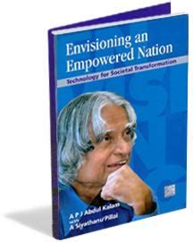

Avul Pakir Jainulabdeen Abdul Kalam was born on 15 October 1931, to a Tamil Muslim family in the pilgrimage centre of Rameswaram on Pamban Island, then in the Madras Presidency and now in the State of Tamil Nadu. His father Jainulabdeen Marakayar was a boat owner and imam of a local mosque his mother Ashiamma was a housewife.His father owned a ferry that took Hindu pilgrims back and forth between Rameswaram and the now uninhabited
After completing his education at the Schwartz Higher Secondary School, Ramanathapuram, Kalam went on to attend Saint Joseph's College, Tiruchirappalli, then affiliated with the University of Madras, from where he graduated in physics in 1954.He moved to Madras in 1955 to study aerospace engineering in Madras Institute of Technology.
In his book India 2020, Kalam strongly advocated an action plan to develop India into a "knowledge superpower" and a developed nation by 2020. He regarded his work on India's nuclear weapons programme as a way to assert India's place as a future superpower.I have identified five areas where India has a core competence for integrated action: (1) agriculture and food processing; (2) education and healthcare; (3) information and communication technology; (4) infrastructure, reliable and quality electric power, surface transport and infrastructure for all parts of the country; and (5) self-reliance in critical technologies. These five areas are closely inter-related and if advanced in a coordinated way, will lead to food, economic and national security.
Some of his best books are Transcendence: My Spiritual Experiences with Pramukh Swamiji, published just a month before his death. Wings of Fire: An Autobiography,The Scientific Indian: The Twenty-First Century Guide to the World Around Us, The Life Tree, Poems etc.
The links for the books recommended are provided above Kalam received 7 honorary doctorates from 40 universities. The Government of India honoured him with the Padma Bhushan in 1981 and the Padma Vibhushan in 1990 for his work with ISRO and DRDO and his role as a scientific advisor to the Government.[153] In 1997, Kalam received India's highest civilian honour, the Bharat Ratna, for his contribution to the scientific research and modernisation of defence technology in India.[154] In 2013, he was the recipient of the Von Braun Award from the National Space Society "to recognize excellence in the management and leadership of a space-related project". In 2012, Kalam was ranked number 2 in Outlook India's poll of the Greatest Indian. Following his death, Kalam received numerous tributes. The Tamil Nadu state government announced that his birthday, 15 October, would be observed across the state as "Youth Renaissance Day;" the state government further instituted the "Dr. A. P. J. Abdul Kalam Award", constituting an 8-gram gold medal, a certificate and ₹500,000 (US$6,300). The award will be awarded annually on Independence Day, beginning in 2015, to residents of the state with achievements in promoting scientific growth, the humanities or the welfare of students. On the anniversary of Kalam's birth in 2015 the CBSE set topics on his name in the CBSE expression series. Prime Minister Narendra Modi ceremonially released postage stamps commemorating Kalam at DRDO Bhawan in New Delhi on 15 October 2015, the 84th anniversary of Kalam's birth. Researchers at the NASA's Jet Propulsion Laboratory (JPL) had discovered a new bacterium on the filters of the International Space Station (ISS) and named it Solibacillus kalamii to honour the late president Dr. A. P. J. Abdul Kalam.